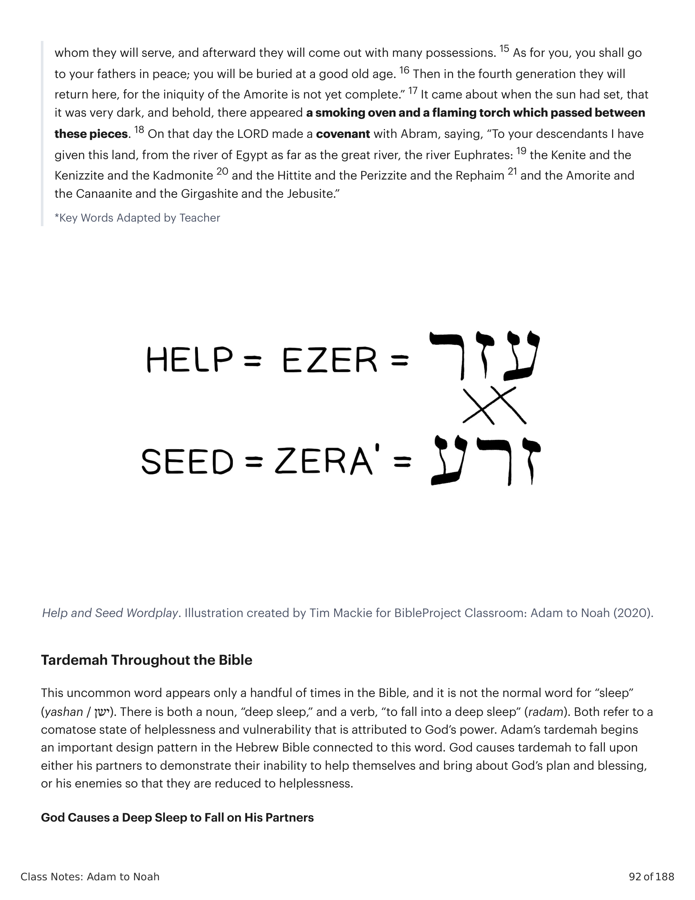

Gênesis 2:18-25 introduz algum vocabulário-chave a respeito de gênero que criou uma gama de interpretações através da história. É importante explorar o significado de várias destas palavras hebraicas em seu contexto original.Genesis 2:18-25 introduces some key vocabulary regarding gender that has created a range of interpretations throughout history. It's important to explore the meaning of several of these Hebrew words in their original context.
A frase 'ezer kenegdo (כנגדו עזר) foi traduzida de maneira diferente na história das versões em inglês: "help meet" (KJV), "helper suitable" (NIV, NAS), "helper fit" (NRSV), "a helper to bear him company" (Tyndale). Comparações de Tradução de Gênesis 2:18. Gênesis 2:18 NIV: "O SENHOR Deus disse: 'Não é bom que o homem esteja só. Farei uma ajudante compatível para ele.'" Gênesis 2:18 ESV: "Então o SENHOR Deus disse: 'Não é bom que o homem esteja só. Farei uma ajudante adequada para ele.'" Gênesis 2:18 NASB: "Então o SENHOR Deus disse: 'Não é bom que o homem esteja só. Farei uma ajudante compatível para ele.'" Gênesis 2:18 NRSV: "Então o SENHOR Deus disse: 'Não é bom que o homem deva estar só. Farei para ele uma ajudante como sua parceira.'" Gênesis 2:18 NLT: "O SENHOR Deus disse: 'Não é bom que o homem esteja só. Farei uma ajudante que seja exatamente certa para ele.'" Gênesis 2:18 KJV: "E o SENHOR Deus disse: 'Não é bom que o homem deva estar só; farei para ele uma ajudante que lhe corresponda.'"The phrase 'ezer kenegdo (כנגדו עזר) has been translated differently in the history of the English versions: "help meet" (KJV), "helper suitable" (NIV, NAS), "helper fit" (NRSV), "a helper to bear him company" (Tyndale). Translation Comparisons of Genesis 2:18. Genesis 2:18 NIV: "The LORD God said, 'It is not good for the man to be alone. I will make a helper suitable for him.'" Genesis 2:18 ESV: "Then the LORD God said, 'It is not good for the man to be alone. I will make a helper fit for him.'" Genesis 2:18 NASB: "Then the LORD God said, 'It is not good for the man to be alone. I will make a helper suitable for him.'" Genesis 2:18 NRSV: "Then the LORD God said, 'It is not good that the man should be alone. I will make him a helper as his partner.'" Genesis 2:18 NLT: "The LORD God said, 'It is not good for the man to be alone. I will make a helper who is just right for him.'" Genesis 2:18 KJV: "And the LORD God said, 'It is not good that the man should be alone; I will make him an help meet for him.'"
As traduções mais antigas mostram uma variedade de interpretações. Grego Antigo: "uma ajuda de acordo com ele" (βοηθὸν κατʼ αὐτόν). Targum Neofiti: "uma parceira que vem como uma com ele" = "uma parceira semelhante a ele" (זוג כד נפק ביה). Targum Pseudo-Jonathan e Onkelos: "um sustento de acordo com ele" (סמך כקבליה). Vulgata Latina: "uma ajudante semelhante a ele" (adiutorium similem sui). A palavra ajuda (עזר) não significa "assistente" ou "ajudante." Em vez disso, descreve alguém que desempenha o papel do outro indispensável sem o qual o bem desejado não pode acontecer. O substantivo é masculino em gênero gramatical, o que significa que a palavra é uma espécie de título ou descritor de papel, não um adjetivo (p.ex., assistente feminina).The earliest translations show a variety of interpretations. Old Greek: "a help according to him" (βοηθὸν κατʼ αὐτόν). Targum Neofiti: "a partner who comes as one with him" = "a partner similar to him" (זוג כד נפק ביה). Targum Pseudo-Jonathan and Onkelos: "a support according to him" (סמך כקבליה). Latin Vulgate: "a helper similar to him" (adiutorium similem sui). The word help (עזר) does not mean "assistant" or "helper." Rather, it describes someone who plays the role of the indispensable other without whom the desired good cannot happen. The noun is masculine in grammatical gender, which means the word is a kind of title or role descriptor, not an adjective (e.g., female assistant).
O substantivo "auxílio" ocorre 21 vezes na Bíblia Hebraica. Fora de Gênesis 2, é usado apenas para descrever Yahweh como libertador de seu povo, ou de humanos inúteis que provêm "nenhuma ajuda" comparados a Yahweh. Êxodo 18:4 (NVI): "E o outro foi chamado Eli'ezer, pois disse: 'O Deus de meu pai foi o meu 'ezer; ele me livrou da espada de Faraó.'" Deuteronômio 33:7 (NVI): "E isto ele disse sobre Judá: 'Ouve, SENHOR, o clamor de Judá; traze-o ao seu povo. Com suas próprias mãos ele defende a sua causa. Oh, sê o seu 'ezer contra seus inimigos!'" Deuteronômio 33:26-27 (NVI): "26 Não há ninguém como o Deus de Jesurum, que cavalga sobre os céus como o teu 'ezer e sobre as nuvens na sua majestade. 27 O Deus eterno é o teu refúgio, e por baixo estão os braços eternos. Ele expulsará os teus inimigos de diante de ti, dizendo: 'Destruí-os!'" Deuteronômio 33:29 (NVI): "Bem-aventurado és tu, Israel! Quem é como tu, um povo salvo pelo SENHOR? Ele é o teu escudo e 'ezer e a tua gloriosa espada. Teus inimigos se curvarão diante de ti, e tu pisarás nas suas alturas." Oséias 13:9 (NVI): "Tu estás destruído, Israel, porque estás contra mim, contra o teu 'ezer." Salmos 20:1-2 (NVI): "1 Que o SENHOR te responda quando estiveres em angústia; que o nome do Deus de Jacó te proteja. 2 Que ele te envie 'ezer do santuário e te conceda apoio de Sião." Salmos 33:18-20 (NVI): "18 Mas os olhos do SENHOR estão sobre os que o temem, sobre aqueles cuja esperança está no seu amor leal, 19 para livrá-los da morte e mantê-los vivos na fome. 20 Nós esperamos no SENHOR; ele é o nosso 'ezer e o nosso escudo." Salmo 121:1-2 (NVI): "1 Elevo os meus olhos para os montes—de onde virá o meu 'ezer? 2 O meu 'ezer vem do SENHOR, que fez o Céu e a Terra." Salmo 146:5-6 (NVI): "5 Bem-aventurado aquele cujo 'ezer é o Deus de Jacó, cuja esperança está no SENHOR seu Deus. 6 Ele é o que fez o Céu e a Terra, o mar e tudo o que neles há—ele permanece fiel para sempre." Isaías 30:3-5 (NVI): "3 Mas a proteção de Faraó será a tua vergonha, a sombra do Egito será a tua desgraça. 4 Embora tenham oficiais em Zoã e seus enviados tenham chegado a Hanes, 5 todos serão envergonhados por causa de um povo inútil para eles, que não traz 'ezer nem vantagem, mas apenas vergonha e desgraça." Ezequiel 12:13-14 (NVI): "13 ... trarei [Zedequias] a Babilônia, a terra dos caldeus, mas ele não a verá, e ali ele morrerá. 14 Espalharei aos ventos todos os que estão ao seu redor—o seu pessoal e todo o seu 'ezer—e os perseguirei com espada desembainhada."The noun "help" occurs 21 times in the Hebrew Bible. Outside of Genesis 2, it is only used to describe Yahweh as a deliverer of his people, or of useless humans who provide "no help" compared to Yahweh. Exodus 18:4 (NIV): "And the other was named Eli'ezer, for he said, 'My father's God was my 'ezer; he saved me from the sword of Pharaoh.'" Deuteronomy 33:7 (NIV): "And this he said about Judah: 'Hear, LORD, the cry of Judah; bring him to his people. With his own hands he defends his cause. Oh, be his 'ezer against his foes!'" Deuteronomy 33:26-27 (NIV): "26 There is no one like the God of Jeshurun, who rides across the heavens as your 'ezer and on the clouds in his majesty. 27 The eternal God is your refuge, and underneath are the everlasting arms. He will drive out your enemies before you, saying, 'Destroy them!'" Deuteronomy 33:29 (NIV): "Blessed are you, Israel! Who is like you, a people saved by the LORD? He is your shield and 'ezer and your glorious sword. Your enemies will cower before you, and you will tread on their heights." Hosea 13:9 (NIV): "You are destroyed, Israel, because you are against me, against your 'ezer." Psalms 20:1-2 (NIV): "1 May the LORD answer you when you are in distress; may the name of the God of Jacob protect you. 2 May he send you 'ezer from the sanctuary and grant you support from Zion." Psalms 33:18-20 (NIV): "18 But the eyes of the LORD are on those who fear him, on those whose hope is in his unfailing love, 19 to deliver them from death and keep them alive in famine. 20 We wait in hope for the LORD; he is our 'ezer and our shield." Psalm 121:1-2 (NIV): "1 I lift up my eyes to the mountains—where does my 'ezer come from? 2 My 'ezer comes from the LORD, the maker of Heaven and Earth." Psalm 146:5-6 (NIV): "5 Blessed are those whose 'ezer is the God of Jacob, whose hope is in the LORD their God. 6 He is the maker of Heaven and Earth, the sea, and everything in them—he remains faithful forever." Isaiah 30:3-5 (NIV): "3 But Pharaoh's protection will be to your shame, Egypt's shade will bring you disgrace. 4 Though they have officials in Zoan and their envoys have arrived in Hanes, 5 everyone will be put to shame because of a people useless to them, who bring neither 'ezer nor advantage, but only shame and disgrace." Ezekiel 12:13-14 (NIV): "13 ... I will bring [Zedekiah] to Babylonia, the land of the Chaldeans, but he will not see it, and there he will die. 14 I will scatter to the winds all those around him—his staff and all his 'ezer—and I will pursue them with drawn sword."
A palavra 'ezer é frequentemente usada para descrever reforço militar, embora em contexto, sempre retrate tal poder militar como impotente comparado ao 'ezer de Yahweh. Definindo "Ajuda": A palavra ajuda (עזר) não significa "assistente" ou "ajudante." Em vez disso, descreve alguém que desempenha o papel do outro indispensável sem o qual o bem desejado não pode acontecer.The word 'ezer is often used to describe military backup, though in context, it always portrays such military power as powerless compared to Yahweh's 'ezer. Defining "Help": The word help (עזר) does not mean "assistant" or "helper." Rather, it describes someone who plays the role of the indispensable other without whom the desired good cannot happen.
Vejamos a outra metade da frase em Gênesis 2:18: "ajudante correspondente a ele." Esta é uma palavra composta "ke" (כ) "como, assim, de acordo com" + "neged" (כנגד) "em frente de, oposto." A palavra "neged" significa, basicamente, "em frente de, antes." Êxodo 19:2 (NVI): "... e Israel acampou ali no deserto em frente de (neged) o monte." Êxodo 34:10 (NVI): "Diante de (neged) todo o teu povo, farei maravilhas nunca antes feitas em qualquer nação em todo o mundo." Gênesis 2:18 e 20 são as únicas ocorrências desta preposição com neged, embora o significado da preposição de "como, assim" indique similaridade. Dada a imagética espacial de "em frente de", o significado parece ser "semelhante ao que estaria diante dele." Poderíamos usar uma metáfora de espelhamento para captar a ideia central.Let's look at the other half of the phrase in Genesis 2:18: "helper corresponding to him." This is a compound word "ke" (כ) "like, as, according to" + "neged" (כנגד) "in front of, opposite." The word "neged" means, basically, "in front of, before." Exodus 19:2 (NIV): "... and Israel camped there in the desert in front of (neged) the mountain." Exodus 34:10 (NIV): "Before (neged) all your people, I will do wonders never before done in any nation in all the world." Genesis 2:18 and 20 are the only occurrences of this preposition with neged, though the preposition's meaning of "like, as" indicates similarity. Given the spatial imagery of "in front of," the meaning seems to be "similar to what would face him." We might use a metaphor of mirroring to get the core idea.
"A última parte do v. 18 lê-se literalmente: 'Farei para ele uma ajudante como em frente dele (ou de acordo com o que está em frente dele).' Esta última frase, 'como em frente dele (ou de acordo com o que está em frente dele)' (keneḡdô), ocorre apenas aqui e no v. 20. Sugere que o que Deus cria para Adão lhe corresponderá. Assim a nova criação não será nem superior nem inferior, mas uma igual. A criação desta ajudante formará uma metade de uma polaridade, e será para o homem como o polo sul é para o polo norte.""The last part of v. 18 reads literally, 'I will make him for him a helper as in front of him (or according to what is in front of him).' This last phrase, 'as in front of him (or according to what is in front of him)' (keneḡdô), occurs only here and in v. 20. It suggests that what God creates for Adam will correspond to him. Thus the new creation will be neither a superior nor an inferior, but an equal. The creation of this helper will form one-half of a polarity, and will be to man as the south pole is to the north pole."
Hamilton, Victor P. (1990). The Book of Genesis, Chapters 1-17. Eerdmans.Hamilton, Victor P. (1990). The Book of Genesis, Chapters 1-17. Eerdmans.
Definindo "Ajudante Correspondente a Ele": Se combinarmos nosso estudo destas duas palavras, 'ezer e neged, produzimos a seguinte paráfrase de Gênesis 2:18. "Não é bom que o humano esteja solitário. Farei um que possa livrá-lo de sua incapacidade de cumprir a comissão divina sozinho, um que o espelha."Defining "Helper Corresponding to Him": If we combine our study of these two words, 'ezer and neged, we produce the following paraphrase of Genesis 2:18. "It is not good for the human to be solitary. I will make one who can deliver him from his inability to fulfill the divine commission alone, one who mirrors him."
"Esta nova criação que o homem necessita é chamada de ajudante (ʿezer), que é masculina em gênero, embora aqui seja um termo para mulher. Qualquer sugestão de que esta palavra particular denota alguém que tem apenas um status de associado ou subordinado a um membro sênior é refutada pelo fato de que mais frequentemente esta mesma palavra descreve o relacionamento de Yahweh com Israel. Ele é a ajuda(nta) de Israel porque ele é o mais forte (veja, p.ex., Êx 18:4; Dt 33:7, 26, 29; Sl 33:20; 115:9-11; 124:8; 146:5; etc.) ... A palavra é usada menos frequentemente para ajudantes humanos, e mesmo aqui, o ajudante é aquele a quem se apela por causa de força militar superior (Is 30:5) ou tamanho superior (Sl 121:1). O verbo por trás de ʿezer é ʿazar, que significa ... 'salvar do perigo', 'livrar da morte.' A mulher em Gn 2 livra ou salva o homem de sua solidão.""This new creation which man needs is called a helper (ʿezer), which is masculine in gender, though here it is a term for woman. Any suggestion that this particular word denotes one who has only an associate or subordinate status to a senior member is refuted by the fact that most frequently this same word describes Yahweh's relationship to Israel. He is Israel's help(er) because he is the stronger one (see, e.g., Exod. 18:4; Deut. 33:7, 26, 29; Ps. 33:20; 115:9-11; 124:8; 146:5; etc.) ... The word is used less frequently for human helpers, and even here, the helper is one appealed to because of superior military strength (Isa. 30:5) or superior size (Ps. 121:1). The verb behind ʿezer is ʿazar, which means ... 'save from danger,' 'deliver from death.' The woman in Gen. 2 delivers or saves man from his solitude."
Hamilton, Victor P. (1990). The Book of Genesis, Chapters 1-17. Eerdmans.Hamilton, Victor P. (1990). The Book of Genesis, Chapters 1-17. Eerdmans.
Há outra palavra hebraica que precisamos explorar para entender o significado completo desta história: "tardemah" ou "sono profundo." Esta palavra incomum aparece apenas um punhado de vezes na Bíblia, e não é a palavra normal para "sono" (yashan / ישן). Veja onde ocorre na narrativa de Gênesis 2. Gênesis 2:21-22 (Tradução do Instrutor): "21 e Yahweh fez cair um sono profundo sobre o humano, e ele dormiu, e tomou uma de suas costelas, e fechou a carne no seu lugar. 22 e Yahweh construiu a costela que tomou do humano em mulher."There is another Hebrew word we'll need to explore in order to understand the full meaning of this story: "tardemah" or "deep sleep." This uncommon word appears only a handful of times in the Bible, and it is not the normal word for "sleep" (yashan / ישן). Take a look at where it occurs in the Genesis 2 narrative. Genesis 2:21-22 (Instructor's Translation): "21 and Yahweh caused to fall a deep sleep on the human and he slept, and he took one from his sides, and he closed the flesh of its place. 22 and Yahweh built the side which he took from the human into woman."
Observe as semelhanças entre Gênesis 2:18-25 e o pacto de Deus com Abraão em Gênesis 15. Gênesis 15:2-21 (NAA): "2 Abrão disse: 'Ó SENHOR Deus, que me darás, visto que sou sem filhos, e o herdeiro da minha casa é Eliézer de Damasco?' 3 Disse mais Abrão: 'Visto que não me deste descendência, um nascido em minha casa será o meu herdeiro.' 4 Então eis que veio a palavra do SENHOR a ele, dizendo: 'Este não será o teu herdeiro; mas aquele que sairá de tuas entranhas, esse será o teu herdeiro.' 5 E levou-o para fora, e disse: 'Olha agora para os céus, e conta as estrelas, se és capaz de as contar.' E disse-lhe: 'Assim será a tua descendência.' 6 Ele creu no SENHOR, e isso lhe foi imputado como justiça. 7 E disse-lhe: 'Eu sou o SENHOR que te tirei de Ur dos caldeus, para te dar esta terra para a possuíres.' 8 Ele disse: 'Ó SENHOR Deus, como saberei que a possuirei?' 9 Disse-lhe: 'Traze-me uma bezerra de três anos, e uma cabra de três anos, e um carneiro de três anos, e uma rola, e um pombinho.' 10 Trouxe-lhe todos estes, e cortou-os pelo meio, e pôs cada metade oposta à outra; mas não cortou as aves. 11 As aves de rapina desciam sobre as carcaças, e Abrão as afugentava. 12 Ora, ao pôr do sol, um sono profundo caiu sobre Abrão; e eis que veio sobre ele terror, e grande escuridão. 13 Disse Deus a Abrão: 'Sabe com certeza que a tua descendência será estrangeira numa terra que não é deles, onde serão escravizados e oprimidos por quatrocentos anos. 14 Mas também julgarei a nação a quem eles servirão, e depois sairão com muitos bens. 15 Quanto a ti, irás em paz para teus pais; serás sepultado em boa velhice. 16 Na quarta geração, retornarão para cá, porque a iniquidade dos amorreus ainda não está completa.' 17 Aconteceu que, quando o sol se pôs, houve grande escuridão, e eis que apareceu um forno fumegante e uma tocha flamejante que passava entre aquelas peças. 18 Naquele dia, o SENHOR fez um pacto com Abrão, dizendo: 'À tua descendência tenho dado esta terra, desde o rio do Egito até o grande rio, o rio Eufrates: 19 o quenita, o quenizita e o cadmonita, 20 e o hitita, o perizeu e o refains, 21 e o amorreu, o cananeu, o girgasita e o jebuseu.'"Note the commonalities between Genesis 2:18-25 and God's covenant with Abraham in Genesis 15. Genesis 15:2-21 (NASB): "2 Abram said, 'O Lord God, what will you give me, since I am childless, and the heir of my house is Eliezer of Damascus?' 3 And Abram said, 'Since you have given no offspring to me, one born in my house is my heir.' 4 Then behold, the word of the LORD came to him, saying, 'This man will not be your heir; but one who will come forth from your own body, he shall be your heir.' 5 And he took him outside and said, 'Now look toward the heavens, and count the stars, if you are able to count them.' And he said to him, 'So shall your descendants be.' 6 Then he believed in the LORD; and he reckoned it to him as righteousness. 7 And he said to him, 'I am the LORD who brought you out of Ur of the Chaldeans, to give you this land to possess it.' 8 He said, 'O Lord God, how may I know that I will possess it?' 9 So he said to him, 'Bring me a three year old heifer, and a three year old female goat, and a three year old ram, and a turtledove, and a young pigeon.' 10 Then he brought all these to him and cut them in two, and laid each half opposite the other; but he did not cut the birds. 11 The birds of prey came down upon the carcasses, and Abram drove them away. 12 Now when the sun was going down, a deep sleep fell upon Abram; and behold, terror and great darkness fell upon him. 13 God said to Abram, 'Know for certain that your descendants will be strangers in a land that is not theirs, where they will be enslaved and oppressed four hundred years. 14 But I will also judge the nation whom they will serve, and afterward they will come out with many possessions. 15 As for you, you shall go to your fathers in peace; you will be buried at a good old age. 16 Then in the fourth generation they will return here, for the iniquity of the Amorite is not yet complete.' 17 It came about when the sun had set, that it was very dark, and behold, there appeared a smoking oven and a flaming torch which passed between these pieces. 18 On that day the LORD made a covenant with Abram, saying, 'To your descendants I have given this land, from the river of Egypt as far as the great river, the river Euphrates: 19 the Kenite and the Kenizzite and the Kadmonite 20 and the Hittite and the Perizzite and the Rephaim 21 and the Amorite and the Canaanite and the Girgashite and the Jebusite.'"

Esta palavra incomum aparece apenas um punhado de vezes na Bíblia, e não é a palavra normal para "sono" (yashan / ישן). Há tanto um substantivo, "sono profundo", quanto um verbo, "cair em sono profundo" (radam). Ambos referem-se a um estado de coma de desamparo e vulnerabilidade que é atribuído ao poder de Deus. O tardemah de Adão inicia um importante padrão de design na Bíblia Hebraica conectado a esta palavra. Deus faz tardemah cair sobre seus parceiros para demonstrar sua incapacidade de se ajudarem a si mesmos e trazerem sobre si o plano e a bênção de Deus, ou sobre seus inimigos para que sejam reduzidos a desamparo.This uncommon word appears only a handful of times in the Bible, and it is not the normal word for "sleep" (yashan / ישן). There is both a noun, "deep sleep," and a verb, "to fall into a deep sleep" (radam). Both refer to a comatose state of helplessness and vulnerability that is attributed to God's power. Adam's tardemah begins an important design pattern in the Hebrew Bible connected to this word. God causes tardemah to fall upon either his partners to demonstrate their inability to help themselves and bring about God's plan and blessing, or his enemies so that they are reduced to helplessness.
Há uma última palavra para explorar nesta sessão: "tsela'", ou "costela" como a vemos traduzida em Gênesis 2:21. Será que realmente significa "costela"? Gênesis 2:21 (NVI): "Assim o SENHOR Deus fez cair um sono profundo sobre o homem; e enquanto ele dormia, tomou uma das costelas do homem e fechou o lugar com carne." Gênesis 2:21 (ESV): "Assim o SENHOR Deus fez cair um sono profundo sobre o homem, e enquanto ele dormia tomou uma de suas costelas e fechou o lugar com carne." Gênesis 2:21 (NASB): "Assim o SENHOR Deus fez cair um sono profundo sobre o homem, e ele dormiu; então tomou uma de suas costelas e fechou a carne naquele lugar." Gênesis 2:21 (NRSV): "Assim o SENHOR Deus fez cair um sono profundo sobre o homem, e ele dormiu; então tomou uma de suas costelas e fechou o lugar com carne." Gênesis 2:21 (NLT): "Assim o SENHOR Deus fez cair um sono profundo sobre o homem, e enquanto ele dormia tomou uma de suas costelas e fechou o lugar com carne."There is one last word to explore in this session: "tsela'," or "rib" as we see it translated in Genesis 2:21. Does it really mean "rib"? Genesis 2:21 (NIV): "So the LORD God caused the man to fall into a deep sleep; and while he was sleeping, he took one of the man's ribs and then closed up the place with flesh." Genesis 2:21 (ESV): "So the LORD God caused a deep sleep to fall upon the man, and while he slept took one of his ribs and closed up its place with flesh." Genesis 2:21 (NASB): "So the LORD God caused a deep sleep to fall upon the man, and he slept; then he took one of his ribs and closed up the flesh at that place." Genesis 2:21 (NRSV): "So the LORD God caused a deep sleep to fall upon the man, and he slept; then he took one of his ribs and closed up its place with flesh." Genesis 2:21 (NLT): "So the LORD God caused a deep sleep to fall upon the man, and while he slept took one of his ribs and closed up its place with flesh."
Pesquisa de Concordância de Tsela' (צלע): Há 40 ocorrências da palavra tsela' (צלע) na Bíblia Hebraica. A única vez que é traduzida em termos anatômicos é em Gênesis 2:21. O resto das ocorrências é em termos arquitetônicos. Êxodo 25:12 (NAA): "Fundirás para ela quatro argolas de ouro e as fixarás nos seus quatro pés; duas argolas num lado dela, e duas argolas no outro lado dela." Êxodo 25:14 (NAA): "Porás os varais nas argolas dos lados da arca, para conduzir a arca com eles." Êxodo 26:20 (NAA): "... e para o segundo lado do tabernáculo, ao norte, vinte tábuas ..." Êxodo 26:26 (NAA): "Farás também travessões de madeira de acácia, cinco para as tábuas de um lado do tabernáculo ..." Êxodo 26:35 (NAA): "Porás a mesa fora do véu, e o candelabro em frente da mesa, no lado do tabernáculo para o sul; e porás a mesa no lado norte." 2 Samuel 16:13 (NAA): "Assim Davi e seus homens seguiam pelo caminho; e Simei ia ao longo da encosta da colina paralela a ele, e enquanto ia, amaldiçoava, e atirava pedras e lançava poeira contra ele." 1 Reis 6:5 (NAA): "Contra a parede da casa ele construiu câmaras circundando as paredes da casa, tanto da nave quanto do lugar santíssimo; assim fez câmaras laterais ao redor." A palavra tsela' não significa "costela"; significa "lado." Este termo é usado em outro lugar na Bíblia Hebraica para descrever a construção do tabernáculo ou templo, que é o espaço sagrado que Deus provê para encontrar-se com seu povo e livrá-lo.Concordance Search of Tsela' (צלע): There are 40 occurrences of the word tsela' (צלע) in the Hebrew Bible. The only time it is translated into anatomical terms is in Genesis 2:21. The rest of the occurrences are in architectural terms. Exodus 25:12 (NASB): "You shall cast four gold rings for it and fasten them on its four feet, and two rings shall be on one side of it and two rings on the other side of it." Exodus 25:14 (NASB): "You shall put the poles into the rings on the sides of the ark, to carry the ark with them." Exodus 26:20 (NASB): "... and for the second side of the tabernacle, on the north side, twenty boards ..." Exodus 26:26 (NASB): "Also make crossbars of acacia wood, five for the frames on one side of the tabernacle ..." Exodus 26:35 (NASB): "You shall set the table outside the veil, and the lampstand opposite the table on the side of the tabernacle toward the south; and you shall put the table on the north side." 2 Samuel 16:13 (NASB): "So David and his men went on the way; and Shimei went along on the hillside parallel with him and as he went he cursed and cast stones and threw dust at him." 1 Kings 6:5 (NASB): "Against the wall of the house he built stories encompassing the walls of the house around both the nave and the inner sanctuary; thus he made side chambers all around." The word tsela' does not mean "rib;" it means "side." This term is used elsewhere in the Hebrew Bible to describe the construction of the tabernacle or temple, which is the sacred space God provides to meet with his people and deliver them.
"A palavra [tsela'] é usada cerca de quarenta vezes na Bíblia Hebraica mas não é um termo anatômico em nenhuma outra passagem. Fora de Gênesis 2, com a exceção de 2 Samuel 16:13 (referente ao outro lado da colina), a palavra é usada apenas arquitetonicamente nas passagens do tabernáculo/templo (Êx 25-38; 1 Rs 6-7; Ez 41). Ela pode referir-se a tábuas ou vigas nestas passagens, mas mais frequentemente refere-se a um lado ou outro, tipicamente quando há dois lados (argolas ao longo de dois lados da arca; quartos em dois lados do templo, o lado norte ou sul; etc.). Com base na declaração de Adão, combinada com estes dados de uso, teríamos de concluir que Deus tomou um dos lados de Adão—provavelmente significando que ele cortou Adão ao meio e do um lado construiu a mulher.""The word [tsela'] is used about forty times in the Hebrew Bible but is not an anatomical term in any other passage. Outside of Genesis 2, with the exception of 2 Samuel 16:13 (referring to the other side of the hill), the word is only used architecturally in the tabernacle/temple passages (Exod. 25-38; 1 Kgs. 6-7; Ezek. 41). It can refer to planks or beams in these passages, but more often it refers to one side or the other, typically when there are two sides (rings along two sides of the ark; rooms on two sides of the temple, the north or south side; etc.). On the basis of Adam's statement, combined with these data on usage, we would have to conclude that God took one of Adam's sides—likely meaning he cut Adam in half and from one side built the woman."
Walton, John H. (2015). The Lost World of Adam and Eve: Genesis 2-3 and the Human Origins Debate. IVP Academic.Walton, John H. (2015). The Lost World of Adam ad Eve: Genesis 2-3 and the Human Origins Debate. IVP Academic: An Imprint of InterVarsity Press.
"[O] texto diz que Deus tomou uma das ṣēlāʿ do homem. Quase sem exceção esta palavra tem sido traduzida como 'costela' (daí ainda hoje as muitas piadas sobre a 'costela de Adão' e a 'libertação das mulheres'). Uma tradução melhor de ṣēlāʿ é lado. A palavra designa um lado ou a concha da arca da aliança (Êx 25:12, 14; 37:3, 5), o lado de um edifício (Êx 26:20; 36:25) ou mesmo uma sala inteira ('câmara lateral, arcada, cela', Ez 41:5-8), ou uma crista ou terraço numa colina (2 Sm 16:13). Gn 2:21 é o único lugar no AT onde as versões modernas traduzem esta palavra como 'costela' ... A passagem afirma que a mulher foi criada de uma parte não designada do corpo do homem, em vez de de um de seus órgãos ou de uma porção de tecido ósseo.""[T]he text says that God took one of the ṣēlāʿ of man. Almost without exception this word has been translated as 'rib' (hence even today the many puns on 'Adam's rib' and 'women's lib'). A better translation of ṣēlāʿ is side. The word designates a side or the shell of the ark of the covenant (Exod. 25:12, 14; 37:3, 5), the side of a building (Exod. 26:20; 36:25) or even a whole room ('side chamber, arcade, cell,' Ezek. 41:5-8), or a ridge or terrace on a hill (2 Sam. 16:13). Gen. 2:21 is the only place in the OT where the modern versions render this word as 'rib' … The passage states that woman was created from an undesignated part of man's body rather than from one of his organs or from a portion of bony tissue."
Hamilton, Victor P. (1990). The Book of Genesis, Chapters 1-17. Eerdmans.Hamilton, Victor P. (1990). The Book of Genesis, Chapters 1-17. Eerdmans.
Intérpretes há muito notaram o vocabulário arquitetônico de Gênesis 2:21-22. Gênesis 2:21-22 (NAA): "21 E [Deus] tomou uma do [lado do humano], e fechou carne no seu lugar; 22 e ele construiu o lado ... em mulher." Todos estes termos são usados em outro lugar na Bíblia Hebraica para descrever a construção de um edifício — e não apenas qualquer edifício! Este mesmo vocabulário ocorre nas narrativas onde Deus provê um espaço sagrado onde ele se encontrará com seu povo e o livrará. A arca de Noé (veja Gn 6:14-22; 7:15-16). O tabernáculo e a arca da aliança (veja Êx 25:10-22). O templo (veja 1 Rs 6:1-38). O novo templo e a nova Jerusalém, aka "Dama Sião" (Is 54 e 60). A construção da mulher libertadora inicia um padrão de design que é fundamental para a narrativa bíblica: a provisão de Deus de uma bênção, livramento ou dom sagrado que se destina a trazer o protagonista a uma união mais próxima com Deus. Mas tragicamente, a provisão de Deus acaba sendo abusada ou distorcida de alguma forma e assim causa uma queda. Como resultado, o livramento futuro torna-se vinculado à esperança de uma semente futura, que nascerá da "mulher/edifício" (a arca, o tabernáculo, templo, casa de Davi, etc.).Interpreters have long noticed the architectural vocabulary of Genesis 2:21-22. Genesis 2:21-22 (NASB): "21 And [God] took one from [the human's] side, and he closed flesh in its place, 22 and he built the side ... into a woman." All of these terms are used elsewhere in the Hebrew Bible to describe the construction of a building—and not just any building! This same vocabulary occurs in the narratives where God provides a sacred space where he will meet with his people and deliver them. The ark of Noah (see Gen. 6:14-22; 7:15-16). The tabernacle and the ark of the covenant (see Exod. 25:10-22). The temple (see 1 Kgs. 6:1-38). The new temple and the new Jerusalem, aka "Lady Zion" (Isa. 54 and 60). The building of the woman deliverer begins a design pattern that is fundamental to the biblical narrative: God's provision of a blessing, deliverance, or sacred gift that is meant to bring the protagonist into closer union with God. But tragically, God's provision ends up being abused or distorted in some way and thus causes a downfall. As a result, the future deliverance becomes bound up with the hope of a future seed, who will be born from the "woman/building" (the ark, the tabernacle, temple, house of David, etc.).
"[Tardemah] o sono bloqueia toda percepção no reino humano. Em cada uma destas passagens há ou perigo no reino humano do qual o que dorme não está ciente, ou há insight no reino visionário a ser ganho. Relativo à última possibilidade, é de interesse que os tradutores da Septuaginta escolheram usar a palavra grega ekstasis em Gênesis 2:21. Esta palavra é a mesma que eles usaram em Gênesis 15:12, sugerindo uma compreensão relacionada a visões, transe e êxtase ... A partir destes dados é fácil concluir que ... a descrição do homem sendo cortado ao meio e a mulher sendo construída da outra metade (Gn 2:21-22) referir-se-ia não a algo que ele experimentou fisicamente mas a algo que ele viu em uma visão. Portanto não descreveria um evento material mas lhe daria uma compreensão de uma realidade importante, que ele expressa eloquentemente em Gênesis 2:23. Consequentemente, poderíamos então concluir que o texto não descreve a origem material de Eva. A visão dizeria respeito à sua identidade como ontologicamente relacionada ao homem. O texto portanto não teria qualquer reivindicação a fazer sobre a origem material da mulher.""[Tardemah] sleep blocks all perception in the human realm. In each of these passages there is either danger in the human realm of which the sleeper is unaware, or there is insight in the visionary realm to be gained. Pertaining to the latter possibility, it is of interest that the Septuagint translators chose to use the Greek word ekstasis in Genesis 2:21. This word is the same as the one they used in Genesis 15:12, suggesting an understanding related to visions, trances and ecstasy ... From these data it is easy to conclude that ... the description of the man being cut in half and the woman being built from the other half (Gen. 2:21-22) would refer not to something he physically experienced but to something that he saw in a vision. It would therefore not describe a material event but would give him an understanding of an important reality, which he expresses eloquently in Genesis 2:23. Consequently, we would then be able to conclude that the text does not describe the material origin of Eve. The vision would concern her identity as ontologically related to the man. The text would therefore have no claim to make about the material origin of woman."
Walton, John H. (2015). The Lost World of Adam ad Eve: Genesis 2-3 and the Human Origins Debate. IVP Academic: An Imprint of InterVarsity Press.Walton, John H. (2015). The Lost World of Adam ad Eve: Genesis 2-3 and the Human Origins Debate. IVP Academic: An Imprint of InterVarsity Press.
Algum destes estudos de palavra abriu uma nova maneira de ler Gênesis 2:18-25 para você? Você ainda tem alguma questão premente sobre o significado de alguma destas palavras?Did any of these word studies unlock a new way to read Genesis 2:18-25 for you? Do you still have any pressing questions about the meaning of any of these words?